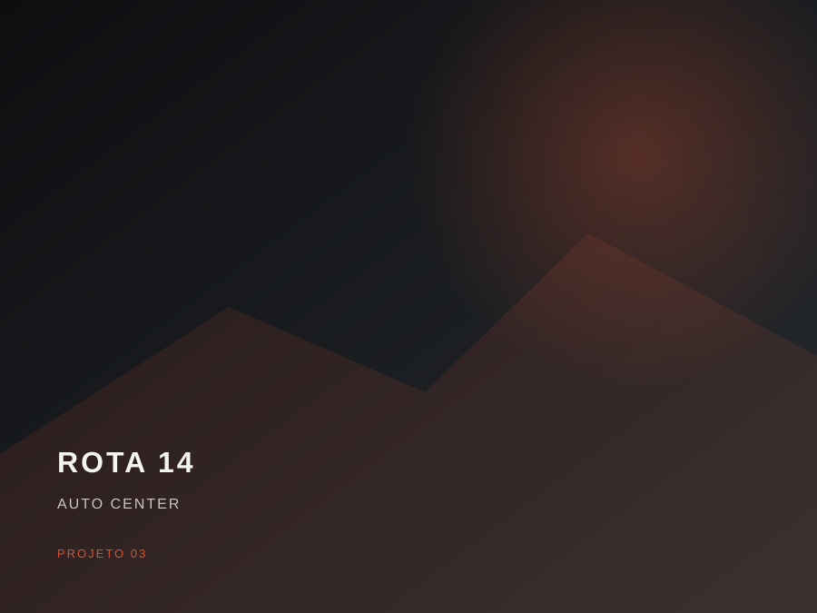
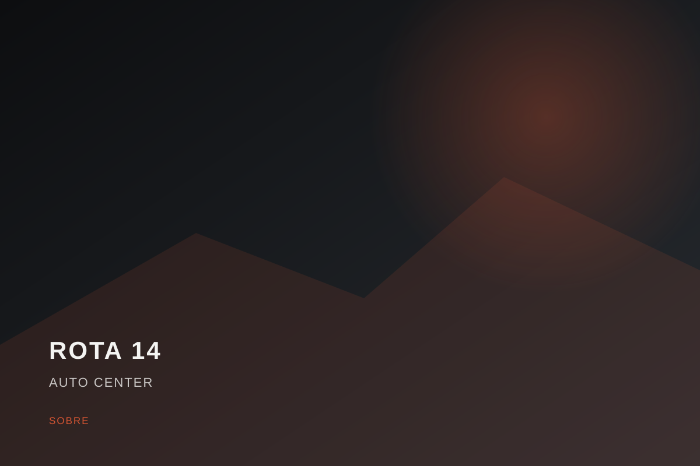

Mecânica preventiva
Óleo, filtros, correias, fluidos e revisão periódica.
Rota 14 Auto Center
Diagnóstico, manutenção preventiva e reparos com comunicação clara do começo ao fim.
Serviços
Diagnóstico claro. Serviço bem feito. Seu carro de volta à estrada.
Óleo, filtros, correias, fluidos e revisão periódica.
Inspeção e manutenção para segurança e estabilidade.
Scanner e investigação objetiva de falhas.
Bateria, alternador, partida e sistemas elétricos.
Avaliação, substituição e orientação de manutenção.
Diagnóstico e manutenção do sistema de climatização.
Projetos
Imagens ilustrativas criadas somente para este site demonstrativo.

Processo
Um fluxo simples para o cliente entender o que está acontecendo.
Entendemos o sintoma e fazemos a inspeção inicial.
Investigamos a causa antes de sugerir troca de peças.
Você recebe a explicação e os itens previstos.
Nada é executado sem sua aprovação.
O reparo é realizado seguindo o escopo autorizado.
Você recebe o veículo e entende o que foi feito.
Sobre
Nossa prioridade é explicar o diagnóstico de forma simples, mostrar o que realmente precisa ser feito e executar o serviço com cuidado. Transparência antes da chave de boca.

Demo
Conteúdo demonstrativo — substituir por avaliações reais somente com autorização.
Contato demonstrativo
Demo fictícia: em um site real, o cliente tocaria aqui e abriria o WhatsApp da oficina com uma mensagem pronta.